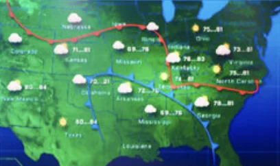

WHEN ARE PEOPLE PLAYING BALLOON RACE????
Every TF2 server on balloon_race_v2b is checked every 5 minutes. Charts update daily until AWS declines my credit card.
Get relentlesly pinged when a 10+ player server is going: join the Discord
Balloon Race daily forecast

Who's on right now
Loading…
–
Will a lobby form in the next hour?
Loading…